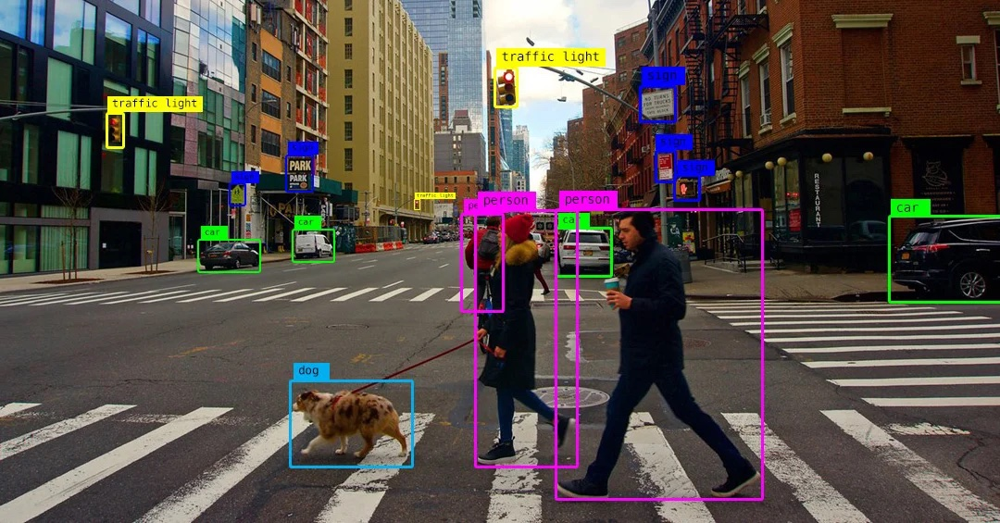

Detección de Bordes (Edge Detection)
Una herramienta fundamental en Visión por Computadora
1 ¿Qué es un Borde?
Un borde es una transición abrupta en la intensidad de los píxeles (o color, en imágenes RGB). En la visión por computadora, es donde percibimos el fin de un objeto y el inicio de otro.
2 ¿Por qué Detectar Bordes?
Los bordes son la base para muchas tareas de visión por computadora.
- Simplificación de la imagen: Reduce la cantidad de datos.
- Reconocimiento de objetos: La base para identificar la forma.
- Segmentación de imágenes: Dividir la imagen en objetos.
- Vehículos autónomos y robótica: Detección de obstáculos.
- Medicina: Análisis de imágenes médicas (ej. detección de tumores).

3 El Corazón de la Detección de Bordes: El Gradiente
Un borde se detecta midiendo el gradiente, que es la magnitud de la tasa de cambio de intensidad.
- Un gradiente grande significa un borde fuerte.
- Un gradiente pequeño significa una región uniforme.

4 Operadores de Detección de Bordes
Usamos filtros o máscaras de convolución para encontrar estos cambios.

5 Operador Sobel: Un Clásico y Eficaz
El operador Sobel es uno de los más populares. Usa dos máscaras para detectar cambios horizontales y verticales.
5.1 Detección Horizontal (Gx)
\[ G_x = \begin{pmatrix} -1 & 0 & 1 \\ -2 & 0 & 2 \\ -1 & 0 & 1 \end{pmatrix} \]
5.2 Detección Vertical (Gy)
\[ G_y = \begin{pmatrix} -1 & -2 & -1 \\ 0 & 0 & 0 \\ 1 & 2 & 1 \end{pmatrix} \]
6 Sobel en Acción
El resultado de aplicar el filtro Sobel, que resalta los bordes.

7 Otros Operadores Comunes
- Prewitt: Similar a Sobel, pero con kernels más simples.
- Laplaciano: Opera con una sola máscara, pero es sensible al ruido.

8 Canny: El Estándar de Oro
El detector de Canny es considerado el “óptimo” por su precisión y sus bordes de 1 píxel de ancho.
- Suavizado Gaussiano: Reducir el ruido.
- Cálculo del Gradiente: Encontrar los cambios.
- Supresión no máxima: Adelgazar los bordes.
- Umbralización por histéresis: Conectar los bordes.
9 Canny en Acción: Resultados Superiores
El resultado de Canny es más limpio y los bordes están mejor definidos.
10 Conclusión y Preguntas
La detección de bordes es una herramienta poderosa y el primer paso para muchas tareas avanzadas de visión por computadora.
- ¿Qué es un borde? Un cambio de intensidad.
- ¿Cómo se detecta? Usando gradientes.
- ¿Qué algoritmo es el mejor? Depende de la aplicación, pero Canny es el estándar.
10.1 ¡Gracias!
¿Preguntas?